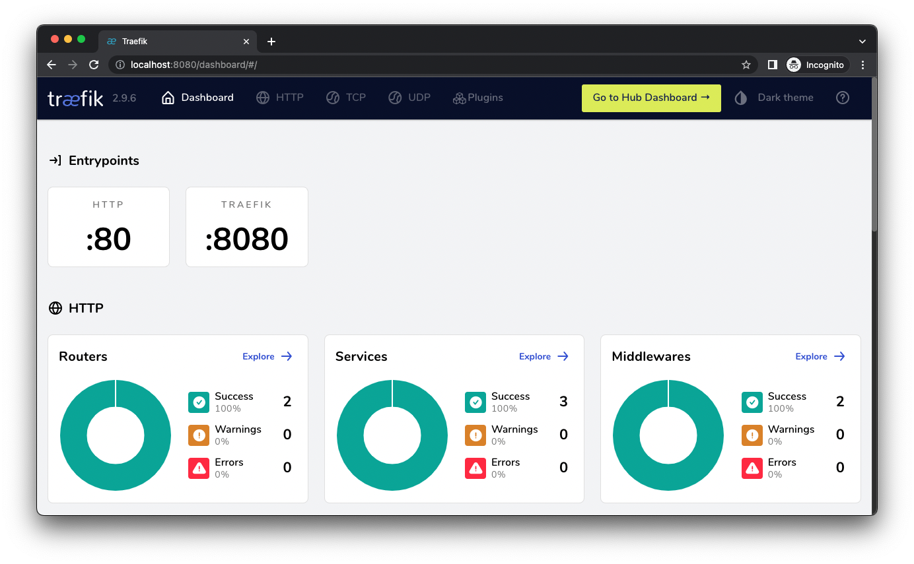

주변으로부터 피드백을 받은 내용이 있어 새로운 글로 보완예정입니다.
- colima는 containerd처럼 cri가 아닌, Docker engine과 containerd 사이의 물건으로 추정됩니다.
- 도커 엔진은 현재 containerd를 통해 프로세스를 관리.
- colima도 docker shim 구조는 탈피했을 거라고 추측 중.
- 도커 엔진과 containerd 사이의 컨테이너 엔진(관리도구?)로 보임
- colima 시작 시, 특정 런타임을 선택할 수 있습니다. 문서를 잘 읽어봅시다.
`colima start --runtime containerd`
- k8s를 위한 colima 시작 명령어는 별도로 있습니다. colima github를 참고해주세요.
traefik v1.7에서는 예제 설명의 기준이
k8s.io/v1beta1 API(deprecated)입니다
k8s.io/v1 API를 기준으로 작성되어 있으니, 참고바랍니다.
로컬환경(minikube)에서 Traefik(^2) 예제를 구현해보겠습니다.
00. Pre-requisite
- Apple Silicon M1, macOS Monterey: ^12.6.3
- macOS Ventura를 사용하신다면, Colima 옵션 설정 및 시작 부분의 명령어 주석을 참조.
- Colima: ^0.5.2, Container Runtime
- minikube: ^1.29.0, 로컬환경에서의 k8s 클러스터 구성
- kubectl: ^v1.26.1
-
krew 설치를 추천드립니다 (ctx 및 ns 설치된 환경에서 진행합니다)
kubectl krew install ctx ns
-
01. Krew 환경 설정
-
Brew 기준, 설치 시 추가 안내가 있을 것입니다. oh-my-zsh을 사용하고 있기에, 아래와 같이 ~/.zshrc에 추가하였습니다.
-
쉘 재실행이 번거롭다면, 설정 이후에
source ~/.zshrc를 실행해주시면 됩니다.export PATH="${PATH}:${HOME}/.krew/bin" source <(kubectl completion zsh) alias k=kubectl complete -F __start_kubectl k
02. Colima 옵션 설정 및 시작
-
Colima를 설치하고, 아래와 같이 옵션을 설정합니다.
- cpu값이나 memory값, disk 값은 머신 환경이나 필요에 따라 조절하시면 됩니다.
- 아래 예제는 4core, 8GB, 20GB의 환경을 기준으로 작성되었습니다.
-
macOS Ventura를 사용하신다면, 두 번째 명령어를 사용하시기 바랍니다.
# if colima is running, stop it by `colima stop` colima start --cpu 4 --memory 8 --disk 20 # if you are using macOS Ventura colima start --arch aarch64 --vm-type=vz --vz-rosetta --cpu 4 --memory 8 --disk 20-
prompt
INFO[0000] starting colima INFO[0000] runtime: docker INFO[0000] preparing network ... context=vm INFO[0000] starting ... context=vm INFO[0021] provisioning ... context=docker INFO[0021] starting ... context=docker INFO[0026] done
-
03. minikube 옵션 설정 및 시작
-
다음의 옵션으로 시작합니다. 에러가 출력되면, 대개 자원 부족이기 때문에 옵션을 조절해주시면 됩니다.
minikube config set cpus 4 minikube config set memory 8G # 8GB, 8192로 설정해도 됩니다. minikube config set disk 20 # 20GB, 20G로 설정해도 됩니다. minikube config set driver docker # colima(docker driver로 인식)를 사용합니다. minikube start-
prompt
😄 minikube v1.29.0 on Darwin 12.6.3 (arm64) ✨ Using the docker driver based on user configuration 📌 Using Docker Desktop driver with root privileges 👍 Starting control plane node minikube in cluster minikube 🚜 Pulling base image ... 🔥 Creating docker container (CPUs=4, Memory=7938MB) ... 🐳 Preparing Kubernetes v1.26.1 on Docker 20.10.23 ... ▪ Generating certificates and keys ... ▪ Booting up control plane ... ▪ Configuring RBAC rules ... 🔗 Configuring bridge CNI (Container Networking Interface) ... ▪ Using image gcr.io/k8s-minikube/storage-provisioner:v5 🌟 Enabled addons: storage-provisioner, default-storageclass 🔎 Verifying Kubernetes components... 🏄 Done! kubectl is now configured to use "minikube" cluster and "default" namespace by default
-
-
minikube가 정상적으로 시작되었는지 확인합니다.
kubectl get nodes # NAME STATUS ROLES AGE VERSION # minikube Ready control-plane 10m v1.26.1-
minikube 환경에서는 ingress 활성화를 해줘야 합니다.
minikube addons enable ingress # After enabled sudo minikube tunnel -
prompt
- 시작 전 새로운 터미널을 켜서 minikube tunnel을 실행해야 합니다. (실습 종료 시까지 유지해야 합니다.)
💡 ingress is an addon maintained by Kubernetes. For any concerns contact minikube on GitHub. You can view the list of minikube maintainers at: https://github.com/kubernetes/minikube/blob/master/OWNERS 💡 After the addon is enabled, please run "minikube tunnel" and your ingress resources would be available at "127.0.0.1" ▪ Using image registry.k8s.io/ingress-nginx/controller:v1.5.1 ▪ Using image registry.k8s.io/ingress-nginx/kube-webhook-certgen:v20220916-gd32f8c343 ▪ Using image registry.k8s.io/ingress-nginx/kube-webhook-certgen:v20220916-gd32f8c343 🔎 Verifying ingress addon... 🌟 The 'ingress' addon is enabled
-
04. 예제 적용해보기
- 아래의 스크립트들은 다음 repository에서도 확인하실 수 있습니다.
- 해당 스크립트들은 Traefik 공식 문서와 동일 내용입니다.
04-1. ClusterRole 적용
-
공식 문서가 제일 정확합니다.
- Traefik은 k8s API를 통해 svc를 검색합니다.
- 클러스터 관리자가 역할을 정의해야하므로, ClusterRole을 적용합니다.
-
script
pwd # ${HOME}/traefik-practice/00_quickstart apply -f 00-role.ymlkind: ClusterRole apiVersion: rbac.authorization.k8s.io/v1 metadata: name: traefik-role rules: - apiGroups: - "" resources: - services - endpoints - secrets verbs: - get - list - watch - apiGroups: - extensions - networking.k8s.io resources: - ingresses - ingressclasses verbs: - get - list - watch - apiGroups: - extensions - networking.k8s.io resources: - ingresses/status verbs: - update
04-2. Traefik 전용 ServiceAccount 생성
-
위에서 정의한 ClusterRole을 적용할 서비스 계정을 생성합니다.
-
IAM에 빗대면, IAM Role을 적용할 서비스 계정을 생성하는 것이라고 보면 되겠네요.
pwd # ${HOME}/traefik-practice/00_quickstart apply -f 01-account.ymlapiVersion: v1 kind: ServiceAccount metadata: name: traefik-account
04-3. ClusterRoleBinding 적용
-
당연한 이야기지만, ClusterRole과 ServiceAccount을 적용합니다.
pwd # ${HOME}/traefik-practice/00_quickstart apply -f 02-role-binding.ymlkind: ClusterRoleBinding apiVersion: rbac.authorization.k8s.io/v1 metadata: name: traefik-role-binding roleRef: apiGroup: rbac.authorization.k8s.io kind: ClusterRole name: traefik-role subjects: - kind: ServiceAccount name: traefik-account namespace: default
04-4. traefik services(dashboard, LB) 적용
-
traefik의 기능인 dashboard와 LoadBalancer를 서비스해봅시다.
- 사실은 로드밸런싱을 통해 dashboard에 8080 포트포워딩 해주는 것이지요.
- 80포트의 경우, 다음 스텝인 whoami 테스트를 위한 포트포워딩 작업입니다.
-
ingress도 결국엔 pod 및 service를 통해 동작하는 것이므로, traefik
Deployment를 구성하여 추가적으로 컨테이너를 확장하도록 구현하는 작업이라고 합니다.pwd # ${HOME}/traefik-practice/00_quickstart apply -f 03-traefik-services.yml -
kubectl tunneling 활성화
-
위의 명령어를 실행하면, 사전에 말씀드린 터미널 창에서 암호를 입력하라고 뜰 것입니다.
-
아래 예제처럼, 중간에 뭔가 틀렸다 싶으면…
kubectl delete -f 03-traefik-services.yml명령어를 통해
삭제하고 다시 적용을 해보면 됩니다. -
prompt in
kubectl tunnelingterminal❯ minikube tunnel ✅ Tunnel successfully started 📌 NOTE: Please do not close this terminal as this process must stay alive for the tunnel to be accessible ... 🏃 Starting tunnel for service traefik-dashboard-service. ❗ The service/ingress traefik-web-service requires privileged ports to be exposed: [80] 🔑 sudo permission will be asked for it. 🏃 Starting tunnel for service traefik-web-service. Password: ✋ Stopping tunnel for service traefik-dashboard-service. ✋ Stopping tunnel for service traefik-web-service. E0204 22:51:14.129905 25131 ssh_tunnel.go:183] error stopping ssh tunnel: operation not permitted 🏃 Starting tunnel for service traefik-dashboard-service. ❗ The service/ingress traefik-web-service requires privileged ports to be exposed: [80] 🔑 sudo permission will be asked for it. 🏃 Starting tunnel for service traefik-web-service.kind: Deployment apiVersion: apps/v1 metadata: name: traefik-deployment labels: app: traefik spec: replicas: 1 selector: matchLabels: app: traefik template: metadata: labels: app: traefik spec: serviceAccountName: traefik-account containers: - name: traefik image: traefik:v2.9 args: - --api.insecure - --providers.kubernetesingress ports: - name: web containerPort: 80 - name: dashboard containerPort: 8080 --- apiVersion: v1 kind: Service metadata: name: traefik-dashboard-service spec: type: LoadBalancer ports: - port: 8080 targetPort: dashboard selector: app: traefik --- apiVersion: v1 kind: Service metadata: name: traefik-web-service spec: type: LoadBalancer ports: - targetPort: web port: 80 selector: app: traefik
-
04-5. whoami 서비스 적용
-
여기서부터는 whoami 서비스까지 제대로 도달하지 않아, 참고로만 하면 좋을 것 같습니다.
pwd # ${HOME}/traefik-practice/00_quickstart apply -f 04-whoami-service.yml apply -f 05-whoami-ingress.ymlkind: Deployment apiVersion: apps/v1 metadata: name: whoami labels: app: whoami spec: replicas: 1 selector: matchLabels: app: whoami template: metadata: labels: app: whoami spec: containers: - name: whoami image: traefik/whoami ports: - name: web containerPort: 80 --- apiVersion: v1 kind: Service metadata: name: whoami spec: ports: - name: web port: 80 targetPort: web selector: app: whoamiapiVersion: networking.k8s.io/v1 kind: Ingress metadata: name: whoami-ingress spec: rules: - http: paths: - path: /whoami pathType: Prefix backend: service: name: whoami port: name: web
minikube 상태 및 traefik 대시보드 확인
-
minikube 상태 확인
kubectl get svc,pod,ingress #NAME TYPE CLUSTER-IP EXTERNAL-IP PORT(S) AGE #service/kubernetes ClusterIP 10.96.0.1 <none> 443/TCP 51m #service/traefik-dashboard-service LoadBalancer 10.102.66.98 127.0.0.1 8080:30024/TCP 50m #service/traefik-web-service LoadBalancer 10.110.10.216 127.0.0.1 80:31761/TCP 50m #service/whoami ClusterIP 10.99.168.47 <none> 80/TCP 33m #NAME READY STATUS RESTARTS AGE #pod/traefik-deployment-bd6c9d49-rvzns 1/1 Running 0 32m #pod/whoami-6d97bf7dcb-r744j 1/1 Running 0 9s #NAME CLASS HOSTS ADDRESS PORTS AGE #ingress.networking.k8s.io/whoami-ingress nginx localhost 192.168.49.2 80 10m -
traefik 대시보드 확인
